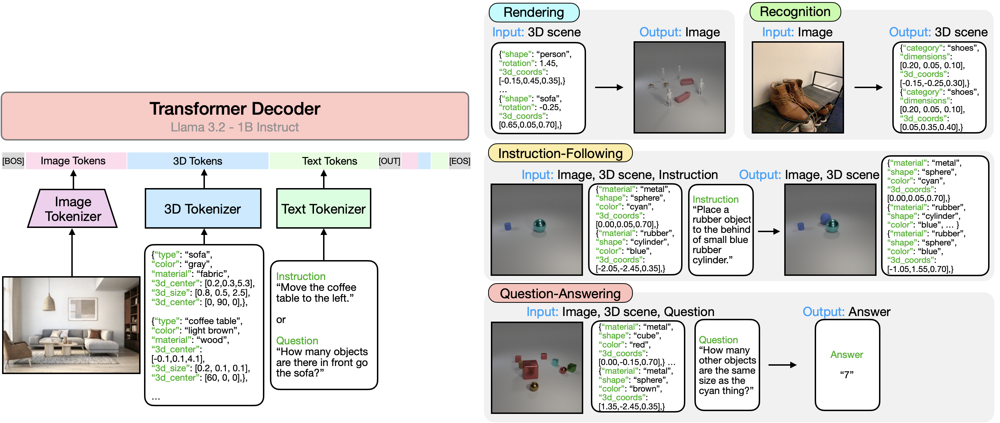
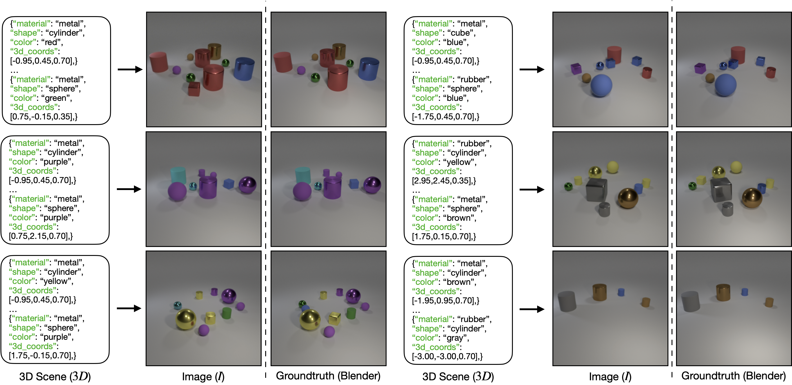
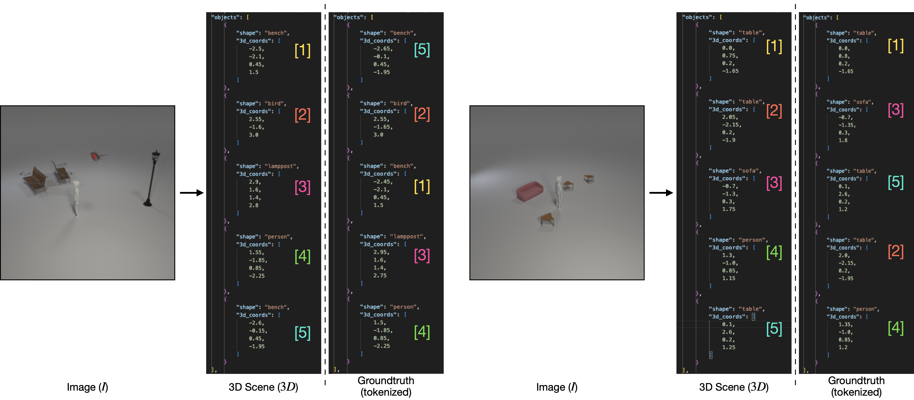
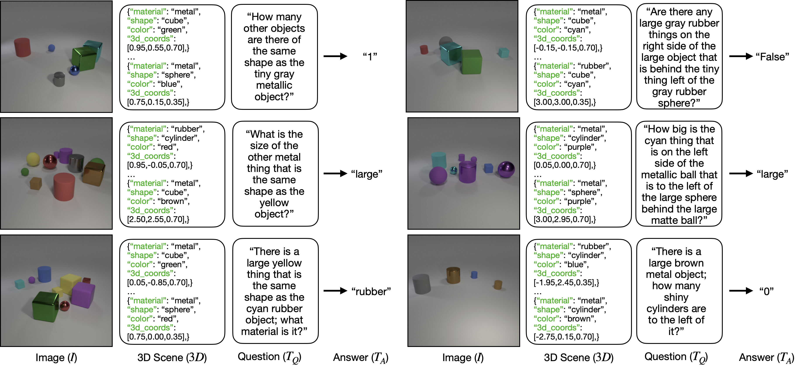

tl;dr We present a cookbook of important findings towards building 3D multi-modal LLMs.
Creating machines capable of understanding the world in 3D is essential in assisting designers that build and edit 3D environments and robots navigating and interacting within a three-dimensional space. Inspired by advances in language and image modeling, we investigate the potential of autoregressive models for a new domain: 3D scenes. We build a 3D multi-modal large language model (3D-MLLM) that aligns language, images, and 3D scenes. We provide a detailed "cookbook" outlining critical design choices for achieving optimal training and performance. We address key questions related to architecture, training strategies, data representation, modality-specific objectives, and more. Through an extensive and rigorous analysis, we evaluate performance across four core 3D tasks (rendering, recognition, instruction-following, question-answering) and three 3D datasets. We believe our findings will serve as practical guidelines for training LLMs tailored for 3D understanding.
Left: Our 3D-MLLM, a decoder-only Transformer, aligns images, 3D, and text. Right: We evaluate 3D-MLLM on four core 3D tasks framed as next-token prediction -- rendering, recognition, instruction-following, and question-answering.
Here, we show qualitative examples for each of the four tasks.
|  |
|  |
|  |
Below is a JSON panel with exactly 3 objects.
The first and third are read-only, and you can only modify the middle object.
Choose shape, material, color, and size
for the second object.
The 3d-coords are fixed.
The coordinate axes are such that the bottom-right corner is the positive x-axis, top-left corner is negative x-axis and the top-right corner is the positive y-axis, bottom-left is negative y-axis.
Click "Generate" to retrieve a corresponding precomputed image from
./static/images/demo/.
{ "shape": "sphere", "material": "metal", "color": "red", "size": "large", "xy-coords": "(-1.60,-2.20)" }
{
"shape": "",
"material": "",
"color": "",
"size": "",
"xy-coords": "(2.40,-2.35)"
}
{ "shape": "cylinder", "material": "rubber", "color": "yellow", "size": "large", "xy-coords": "(2.75,0.35)" }
@misc{sahoo2025XXX,
title={},
author={},
year={2025},
eprint={},
archivePrefix={},
primaryClass={},
url={},
}